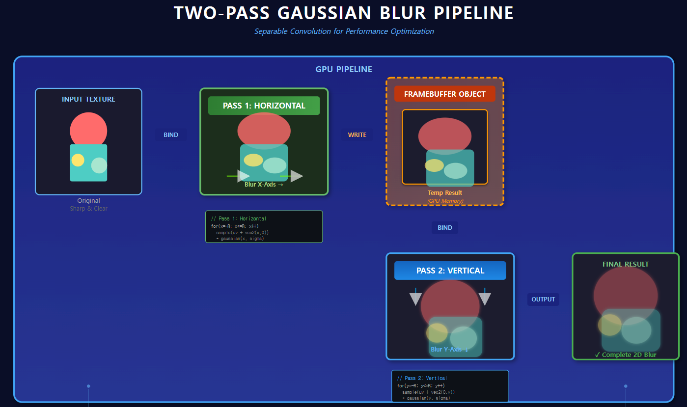

이미지 샘플링 해보기
학습 목표
가우시안 블러 알고리즘 만들어보기그래프 그려보기 ( 라이브러리 포함 )
- 랜덤 함수
float sigma = 0.2; float y = exp(-(p.x*p.x) / (2.0 * sigma * sigma)) / (sqrt(2.0 * 3.14159265) * sigma);
SKSL 실습 코드
미리보기
CanvasKit 로딩 중...
가우시안 블러 알고리즘
가우시안 블러 알고리즘 코드
uniform float2 iResolution; uniform shader iTexture; uniform float blurRadius; float gaussian(float x, float sigma) { return exp(-(x*x) / (2.0 * sigma * sigma)) / (sqrt(2.0 * 3.14159265) * sigma); } half4 main(float2 fragCoord) { const int MAX_RADIUS = 20; float r = clamp(blurRadius, 0.0, float(MAX_RADIUS)); float sigma = max(r, 1.0) * 0.33; half4 color = half4(0.0); float totalWeight = 0.0; for (int x = -MAX_RADIUS; x <= MAX_RADIUS; ++x) { for (int y = -MAX_RADIUS; y <= MAX_RADIUS; ++y) { float2 off = float2(float(x), float(y)); float dist = length(off); if (dist > r) continue; float w = gaussian(dist, sigma); color += iTexture.eval(fragCoord + off) * w; totalWeight += w; } } return color / max(totalWeight, 1e-6); }
가우시안 블러는 가우시안 필터를 사용한 블러 알고리즘 입니다.
기본적인 평균 필터의 경우, 대상 점 주변의 픽셀 값을 모두 동일한 가중치로 평균내어 블러 효과를 만듭니다.
하지만 이러한 특성은 대상 점과 가까운 픽셀이 먼 픽셀보다 더 연관이 있다는 사실을 반영하지 못합니다.
가까운 픽셀에 더 많은 가중치를 줄 필요가 있습니다.
아래 보이는 표는 가우시안 커널 5x5의 예시 입니다.
파라메터인 가우시안 함수 x(dist), Sigma, radius 대해서 알아 봅니다
x는 소스 픽셀과 대상 픽셀과의 거리입니다.
블러의 Radius는 블러의 범위를 결정합니다. Radius가 클수록 더 넓은 영역의 픽셀을 고려하여 블러 효과를 만듭니다.
블러의 Radius는 커널 사이즈를 결정하며, Radius * 2 + 1 이 커널 크기가 됩니다
예를 들어 3이면 7x7 커널이 됩니다.
Sigma는 가우시안 함수의 표준 편차를 나타내며, 블러의 강도를 조절합니다.
Sigma가 클수록 블러 효과가 더 부드럽고 넓게 퍼집니다.
그래서 radius와 sigma는 비례 관계에 있습니다.
sigma 값이 2만 넘어도 그래프가 평탄해 집니다.
실제 블러 코드에서는 radius 값이 크게 되어도, 커널 사이즈와, 시그마 값은 고정이고 다운샘플 방식으로 처리가 됩니다.

Assignment
1. 위에서 가우시안 그래프를 그려 봅니다.
2. Blur Radius가 20이면 샘플링 개수는 ??
투 패스 가우시안 블러 알고리즘
투 패스 가우시안 블러는 가우시안 필터 성능 개선하기 위한 기법입니다.
가우시안 블러는 각 픽셀에 대해 가우시안 커널을 사용하기 때문에 가우시안 커널 크기가 커지게 되면 많은 샘플링을 수행 합니다.
가우시안 블러를 두 번에 나누어서 적용하는 방식입니다.
가로로 픽셀의 대해서만 가우시안 블러를 적용한 후, 해당 결과를 세로로 픽셀에 대해서만 가우시안 블러를 적용합니다.
// TODO two pass 가우시안 알고리즘 link Blur Radius가 20이면 샘플링 개수는 ??

uniform float2 iResolution;
uniform shader iTexture;
uniform float blurRadius;
float gaussian(float x, float sigma) {
return exp(-(x*x) / (2.0 * sigma * sigma)) / (sqrt(2.0 * 3.14159265) * sigma);
}
half4 horizontalBlur(float2 fragCoord, float sigma, int radius) {
half4 color = half4(0.0);
float totalWeight = 0.0;
const int MAX_RADIUS = 20;
float r = clamp(blurRadius, 0.0, float(MAX_RADIUS));
for (int x = -MAX_RADIUS; x <= MAX_RADIUS; ++x) {
float2 off = float2(float(x), 0.0);
float dist = abs(float(x));
if (dist > r) continue;
float w = gaussian(dist, sigma);
color += iTexture.eval(fragCoord + off) * w;
totalWeight += w;
}
return color / max(totalWeight, 1e-6);
}
half4 verticalBlur(float2 fragCoord, float sigma, int radius) {
half4 color = half4(0.0);
float totalWeight = 0.0;
const int MAX_RADIUS = 20;
float r = clamp(blurRadius, 0.0, float(MAX_RADIUS));
for (int y = -MAX_RADIUS; y <= MAX_RADIUS; ++y) {
float2 off = float2(0.0, float(y));
float dist = abs(float(y));
if (dist > r) continue;
float w = gaussian(dist, sigma);
color += iTexture.eval(fragCoord + off) * w;
totalWeight += w;
}
return color / max(totalWeight, 1e-6);
}
half4 main(float2 fragCoord) {
const int MAX_RADIUS = 20;
float r = clamp(blurRadius, 0.0, float(MAX_RADIUS));
float sigma = max(r, 1.0) * 0.33;
half4 color = half4(0.0);
float totalWeight = 0.0;
// two pass 알고리즘 아님..각 파이프라인의 결과만 보기 위함.
//color = horizontalBlur(fragCoord, sigma, int(r));
//color = verticalBlur(fragCoord, sigma, int(r));
return color;
}
Down Scale, Up Scale
blur radius가 작은 경우는 큰 문제가 없지만,
blur radius가 커지면 커널 사이즈와 시그마 값이 커져서 샘플링 개수가 많아져서 성능이 떨어 집니다.
이를 해결하기 위한 방법이 다운샘플링과 업샘플링 입니다.
이미지를 다운 스케일을 하여 이미지 해상도를 낮춘 뒤, 낮은 시그마 값과 커널 사이즈로 블러를 적용한 후,
다시 업 스케일을 하여 원래 해상도로 복원하는 방법입니다.
Down Scale
uniform shader iTexture;
uniform float2 iResolution;
half4 main(float2 fragCoord) {
float scale = 4.; // 다운스케일 배율 (2.0 = 1/2, 4.0 = 1/4)
float2 srcCoordCenter = (fragCoord + 0.5) * scale;
// 2x2 박스 필터 (안티앨리어싱)
half4 c00 = iTexture.eval(srcCoordCenter + float2(-0.5 * scale, -0.5 * scale));
half4 c10 = iTexture.eval(srcCoordCenter + float2( 0.5 * scale, -0.5 * scale));
half4 c01 = iTexture.eval(srcCoordCenter + float2(-0.5 * scale, 0.5 * scale));
half4 c11 = iTexture.eval(srcCoordCenter + float2( 0.5 * scale, 0.5 * scale));
// 4개 샘플의 평균
return (c00 + c10 + c01 + c11) * 0.25;
}
UP Scale
uniform shader iTexture;
uniform float2 iResolution;
uniform float blurRadius;
half4 main(float2 fragCoord) {
float scale = 4.0;
// 다운스케일된 텍스처 좌표
float2 downscaledCoord = fragCoord / scale;
// 바이리니어 보간을 위한 4개 샘플
float2 baseCoord = floor(downscaledCoord);
float2 frac = fract(downscaledCoord);
half4 c00 = iTexture.eval(baseCoord + float2(0.0, 0.0));
half4 c10 = iTexture.eval(baseCoord + float2(1.0, 0.0));
half4 c01 = iTexture.eval(baseCoord + float2(0.0, 1.0));
half4 c11 = iTexture.eval(baseCoord + float2(1.0, 1.0));
// 바이리니어 보간
half4 c0 = mix(c00, c10, frac.x);
half4 c1 = mix(c01, c11, frac.x);
return mix(c0, c1, frac.y);
}
Gawase Blur
가와세 블러는 소수 탭을 여러 패스로 누적하여 큰 반경의 블러를 효율적으로 구현하는 기법입니다.
가우시안 블러보다 퀄리티는 좋지 않지만, 성능은 좋습니다.
탭이란 샘플링하는 포인트를 의미하는데, 아래 예제는 9탭을 사용합니다.
가우시안 블러와 언뜻 비슷해보이지만, 가우시안 블러는 radius가 커지게 되면 커널 사이즈가 커지는 반면,
가와세 블러는 radius가 커지더라도 커널 사이즈는 고정이며, step(offset) 값이 변하게 됩니다.
blur radius가 커지면 step이 커지게 되고, 멀리 떨어진 픽셀을 샘플링하게 됩니다.
퀄리티 문제로 인하여 다운샘플링과 함께 패스를 여러번 적용 합니다.
아래는 1패스 9탭 가와세 블러 코드 입니다.
uniform float2 iResolution;
uniform shader iTexture;
uniform float blurRadius;
half4 main(float2 fragCoord) {
float r = clamp(blurRadius, 0.0, 20.0);
half4 sum = half4(0.0);
// 중심
sum += iTexture.eval(fragCoord) * 4.0;
// 상하좌우
sum += iTexture.eval(fragCoord + float2( 0, -r)) * 2.0;
sum += iTexture.eval(fragCoord + float2(-r, 0)) * 2.0;
sum += iTexture.eval(fragCoord + float2( r, 0)) * 2.0;
sum += iTexture.eval(fragCoord + float2( 0, r)) * 2.0;
// 대각선
sum += iTexture.eval(fragCoord + float2(-r, -r));
sum += iTexture.eval(fragCoord + float2( r, -r));
sum += iTexture.eval(fragCoord + float2(-r, r));
sum += iTexture.eval(fragCoord + float2( r, r));
return sum / 16.0;
}
SKSL 코드
5.0
미리보기
CanvasKit 로딩 중...